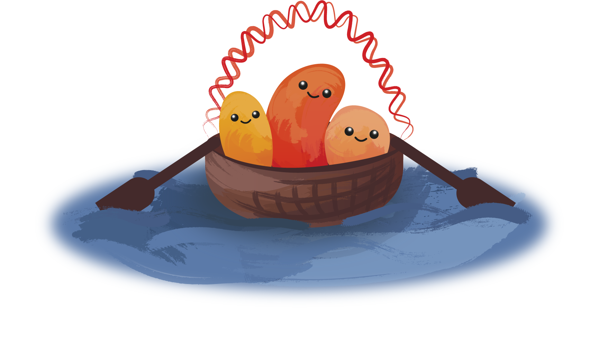

Zorn
We are proud to announce Zorn, an R package and workflow manager for scalable single-cell analysis!
To install Zorn, see the install page.
To get started using Zorn, see the manual.
If you use Zorn in your research, please cite our preprint.
Zorn is developed and maintained by the HenLab and CompMicroLab at Umeå University in beautiful Umeå, Sweden!
Most users want to use Zorn for all operations. However, if you want to expand on low-level functionality, you can have a look at the underlying software Bascet.